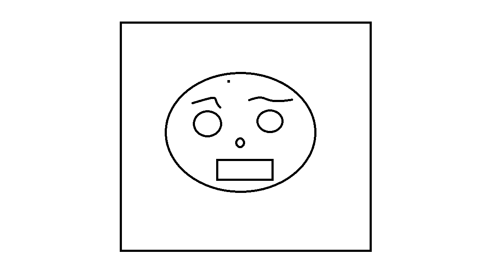
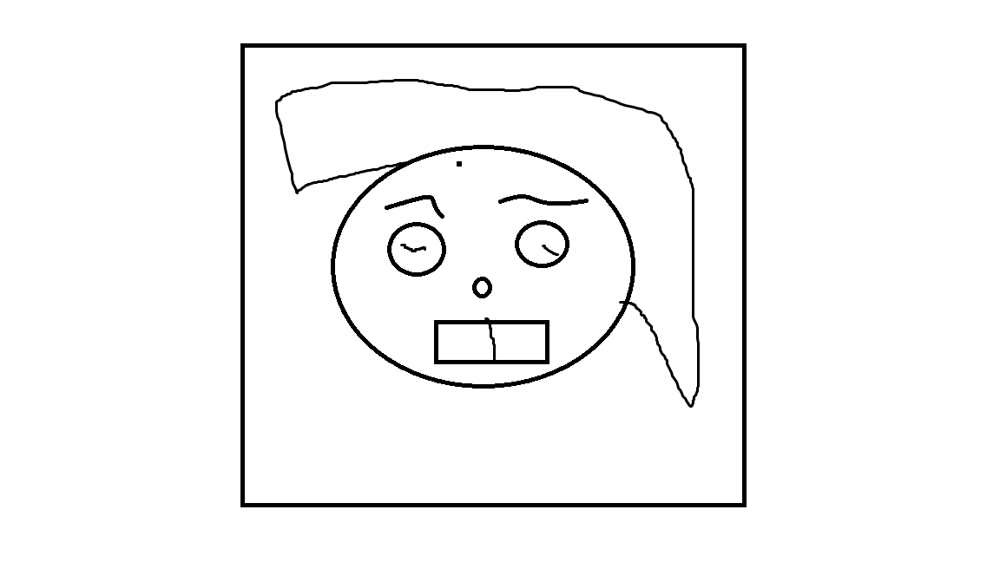
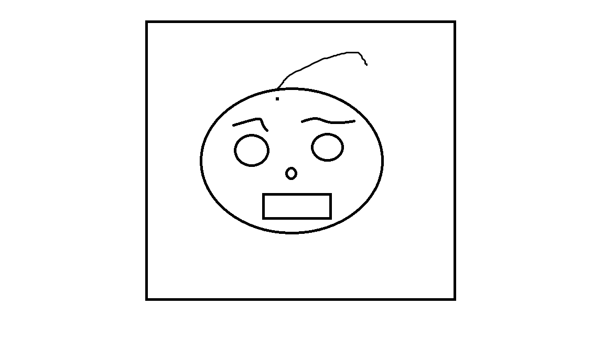

I nostri docenti:
|  | MARCO RUSSO Docente esperto di programmazione Java, con anni di esperienza nello sviluppo software e nella formazione. Appassionato di tecnologia e didattica, guida gli studenti con un approccio pratico, chiaro e orientato al mondo del lavoro. |
|  | ORAZIO LEZZINI Docente specializzato in C# e sviluppo .NET, con una solida esperienza nel mondo enterprise e nella formazione tecnica. Trasmette competenze pratiche e aggiornate, preparando gli studenti a realizzare applicazioni moderne, robuste ed efficienti. |
|  | ETTORE MARONNO Docente di animazione 3D con esperienza nel settore cinematografico, videoludico e pubblicitario. Unisce competenze tecniche e sensibilità artistica per guidare gli studenti nella creazione di progetti visivamente coinvolgenti e professionali. |